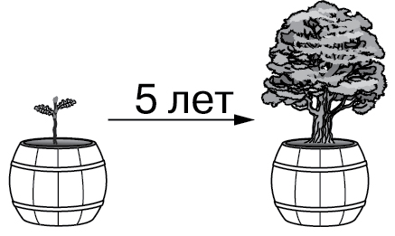

> Введите ваши данные для доступа к терминалу:
БИОЛОГИЧЕСКИЙ МОДУЛЬ: ОПИСАНИЕ РЕЗУЛЬТАТОВ ИССЛЕДОВАНИЙ
В виде чего представляют данные, которые позволяют оценить соотношение сразу нескольких величин?
Для изучения сезонных явлений у птиц используют метод:
Кому из учёных принадлежит труд «История животных»?
Распредели на две группы описания живых организмов:
Какое описание не относится к качественным описаниям?
Распредели на две группы описания живых организмов:
— это представление количественных или других данных в форме строк и столбцов.
— это расчленение, разделение целого на составные части, выделение отдельных сторон и свойств объекта или явления.
Вставьте вместо пропусков верные биологические термины:
— графическое представление данных, позволяющее оценить соотношение нескольких величин.
Способы оформления результатов наблюдений называются .
